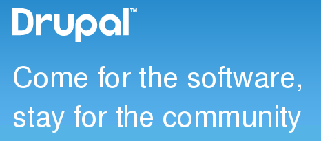

tinyurl.com/whysprint-dcwroc
Stay for the community:
Why you should attend a code sprint
@valthebald
Valery Lourie
Trellon LLC, Wise Trout

Why people come?
- Rewarding
- Education
- Communication
Why people come?

Why people come?
- Relevance

Can I do anything?
Stats on Oct 18, 2014
- 514 Novice issues
- 3795 patch queue
- 4781 pending bugs
Types of tasks
- Write patches
- Review patches
- Issue triage
- Issue summary update
- Documentation
- Localization
If you need help
- Acquia dev desktop
- git
- patch
- git clone --branch 8.0.x --depth=1 http://git.drupal.org/project/drupal.git
- "Stable" 8.0 for porting contrib code
What if you can not attend this specific sprint
drupal.org/core-mentoring
- 2 hour sessions every week
- Happens in IRC drupal.org/irc
- #drupal channel
Resources
- tinyurl.com/whysprint-dcwroc
- drupal.org/core-mentoring
- drupalmentoring.org/mentor-instructions
- drupal.org/new-contributors
- drupal.org/project/issues/search/drupal